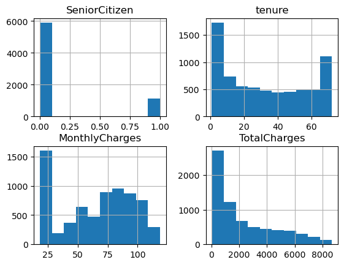

import pandas as pd
from sklearn.model_selection import train_test_split
from sklearn.linear_model import LogisticRegression
from sklearn.discriminant_analysis import LinearDiscriminantAnalysis
from sklearn import metrics
from sklearn.preprocessing import MinMaxScaler
import matplotlib.pyplot as plt
import seaborn as snsStep Up - BT
# read in data
df = pd.read_csv("Step Up Data Set.csv", index_col="customerID")# first look at data
df.sample(4)| gender | SeniorCitizen | Partner | Dependents | tenure | PhoneService | MultipleLines | InternetService | OnlineSecurity | OnlineBackup | DeviceProtection | TechSupport | StreamingTV | StreamingMovies | Contract | PaperlessBilling | PaymentMethod | MonthlyCharges | TotalCharges | Churn | |
|---|---|---|---|---|---|---|---|---|---|---|---|---|---|---|---|---|---|---|---|---|
| customerID | ||||||||||||||||||||
| 3023-GFLBR | Female | 0 | Yes | Yes | 33 | Yes | Yes | Fiber optic | No | No | No | No | No | Yes | Month-to-month | No | Credit card (automatic) | 86.15 | 2745.7 | Yes |
| 6712-OAWRH | Female | 1 | No | No | 26 | Yes | No | Fiber optic | No | No | No | No | Yes | Yes | Month-to-month | Yes | Electronic check | 91.25 | 2351.8 | Yes |
| 1374-DMZUI | Female | 1 | No | No | 4 | Yes | Yes | Fiber optic | No | No | No | No | Yes | Yes | Month-to-month | Yes | Electronic check | 94.30 | 424.45 | Yes |
| 2103-ZRXFN | Male | 0 | No | No | 1 | Yes | Yes | DSL | No | No | No | No | No | No | Month-to-month | No | Mailed check | 50.75 | 50.75 | No |
Clean data
df.info()<class 'pandas.core.frame.DataFrame'>
Index: 7043 entries, 7590-VHVEG to 3186-AJIEK
Data columns (total 20 columns):
# Column Non-Null Count Dtype
--- ------ -------------- -----
0 gender 7043 non-null object
1 SeniorCitizen 7043 non-null int64
2 Partner 7043 non-null object
3 Dependents 7043 non-null object
4 tenure 7043 non-null int64
5 PhoneService 7043 non-null object
6 MultipleLines 7043 non-null object
7 InternetService 7043 non-null object
8 OnlineSecurity 7043 non-null object
9 OnlineBackup 7043 non-null object
10 DeviceProtection 7043 non-null object
11 TechSupport 7043 non-null object
12 StreamingTV 7043 non-null object
13 StreamingMovies 7043 non-null object
14 Contract 7043 non-null object
15 PaperlessBilling 7043 non-null object
16 PaymentMethod 7043 non-null object
17 MonthlyCharges 7043 non-null float64
18 TotalCharges 7043 non-null object
19 Churn 7043 non-null object
dtypes: float64(1), int64(2), object(17)
memory usage: 1.1+ MB# change TotalCharges type to number
df["TotalCharges"] = pd.to_numeric(df["TotalCharges"], errors="coerce")# look for missing values
df.isna().sum()gender 0
SeniorCitizen 0
Partner 0
Dependents 0
tenure 0
PhoneService 0
MultipleLines 0
InternetService 0
OnlineSecurity 0
OnlineBackup 0
DeviceProtection 0
TechSupport 0
StreamingTV 0
StreamingMovies 0
Contract 0
PaperlessBilling 0
PaymentMethod 0
MonthlyCharges 0
TotalCharges 11
Churn 0
dtype: int64df.dropna(axis=0, inplace=True)df.dtypesgender object
SeniorCitizen int64
Partner object
Dependents object
tenure int64
PhoneService object
MultipleLines object
InternetService object
OnlineSecurity object
OnlineBackup object
DeviceProtection object
TechSupport object
StreamingTV object
StreamingMovies object
Contract object
PaperlessBilling object
PaymentMethod object
MonthlyCharges float64
TotalCharges float64
Churn object
dtype: object# plot histograms
df.hist()array([[<Axes: title={'center': 'SeniorCitizen'}>,
<Axes: title={'center': 'tenure'}>],
[<Axes: title={'center': 'MonthlyCharges'}>,
<Axes: title={'center': 'TotalCharges'}>]], dtype=object)
Prepare data for modelling
# transform yes/no variables into boolean
for column in df.columns:
if sorted(df[column].unique()) == sorted(['Yes', 'No']):
df.replace({column: {"Yes": 1, "No": 0}}, inplace=True)# split dataframe into features and response
features = df.drop(["Churn"], axis=1)
response = df["Churn"]# transform categorical variables to dummies
features = pd.get_dummies(features, drop_first=False)features.dtypesSeniorCitizen int64
Partner int64
Dependents int64
tenure int64
PhoneService int64
PaperlessBilling int64
MonthlyCharges float64
TotalCharges float64
gender_Female uint8
gender_Male uint8
MultipleLines_No uint8
MultipleLines_No phone service uint8
MultipleLines_Yes uint8
InternetService_DSL uint8
InternetService_Fiber optic uint8
InternetService_No uint8
OnlineSecurity_No uint8
OnlineSecurity_No internet service uint8
OnlineSecurity_Yes uint8
OnlineBackup_No uint8
OnlineBackup_No internet service uint8
OnlineBackup_Yes uint8
DeviceProtection_No uint8
DeviceProtection_No internet service uint8
DeviceProtection_Yes uint8
TechSupport_No uint8
TechSupport_No internet service uint8
TechSupport_Yes uint8
StreamingTV_No uint8
StreamingTV_No internet service uint8
StreamingTV_Yes uint8
StreamingMovies_No uint8
StreamingMovies_No internet service uint8
StreamingMovies_Yes uint8
Contract_Month-to-month uint8
Contract_One year uint8
Contract_Two year uint8
PaymentMethod_Bank transfer (automatic) uint8
PaymentMethod_Credit card (automatic) uint8
PaymentMethod_Electronic check uint8
PaymentMethod_Mailed check uint8
dtype: object# What I need to do now is to drop the columns that are reduntant, but manually. I think I'll drop the "No" columns
features = features.drop(['gender_Female', 'MultipleLines_No', 'InternetService_No', 'OnlineSecurity_No',
'OnlineBackup_No', 'DeviceProtection_No','TechSupport_No','StreamingTV_No',
'StreamingMovies_No','Contract_Month-to-month','PaymentMethod_Bank transfer (automatic)'],
axis=1)# We also want to normalise numerical columns: these are tenure, MonthlyCharges and TotalCharges
cols_to_scale = ['tenure', 'MonthlyCharges', 'TotalCharges']
features[cols_to_scale] = MinMaxScaler().fit_transform(features[cols_to_scale])
#For some types of models data needs to be scaled, for other type it does not.X_train, X_test, y_train, y_test = train_test_split(features, response)Fit logistic regression model
logistic_reg = LogisticRegression(max_iter=1000).fit(X_train, y_train)Test accuracy of model
logistic_reg.score(X_train, y_train)0.8047023132347364# this is the same result as precentage classified correctly from the confusion matrix
logistic_reg.score(X_test, y_test)0.8014789533560864y_pred = logistic_reg.predict(X_test)# create a confusion matrix
print(metrics.confusion_matrix(y_test, y_pred))
print("Accuracy:",metrics.accuracy_score(y_test, y_pred))[[1164 143]
[ 206 245]]
Accuracy: 0.8014789533560864print(metrics.classification_report(y_test, y_pred)) precision recall f1-score support
0 0.85 0.89 0.87 1307
1 0.63 0.54 0.58 451
accuracy 0.80 1758
macro avg 0.74 0.72 0.73 1758
weighted avg 0.79 0.80 0.80 1758
Display model coefficients
#plt.figure(figsize=(6,4))
coefs = pd.DataFrame(zip(features.columns, logistic_reg.coef_[0]), columns=['variable', 'coefficient'])
#coefs = coefs.sort_values(['coefficient'])
sns.barplot(coefs, x='coefficient', y='variable')<Axes: xlabel='coefficient', ylabel='variable'>Fit linear discriminant analysis
lda = LinearDiscriminantAnalysis().fit(X_train, y_train)lda.score(X_train, y_train)0.8005309063329541lda.score(X_test, y_test)0.7918088737201365fi = pd.DataFrame(zip(features.columns, lda.coef_[0]), columns=['variable', 'coefficient'])
sns.barplot(fi, x='coefficient', y='variable')<Axes: xlabel='coefficient', ylabel='variable'>Let’s try decision tree and random forest
from sklearn.tree import DecisionTreeClassifier
clas = DecisionTreeClassifier().fit(X_train, y_train)clas.score(X_train, y_train)0.9981039059537353clas.score(X_test, y_test)0.729806598407281from sklearn.ensemble import RandomForestClassifier
forest = RandomForestClassifier().fit(X_train, y_train)forest.score(X_train, y_train)0.9981039059537353forest.score(X_test, y_test)0.7946530147895335These seem overfitted.
Let’s figure out with features are significant using statsmodels…
for column in X_train:
print(f'{column}: {X_train[column].unique()}')SeniorCitizen: [0 1]
Partner: [0 1]
Dependents: [0 1]
tenure: [0. 0.46478873 0.25352113 0.04225352 0.12676056 0.61971831
0.6056338 0.35211268 0.85915493 0.95774648 0.14084507 0.81690141
0.47887324 0.09859155 0.49295775 0.70422535 1. 0.23943662
0.05633803 0.67605634 0.84507042 0.77464789 0.15492958 0.97183099
0.71830986 0.01408451 0.63380282 0.8028169 0.36619718 0.98591549
0.29577465 0.26760563 0.73239437 0.92957746 0.1971831 0.08450704
0.43661972 0.16901408 0.88732394 0.22535211 0.87323944 0.74647887
0.32394366 0.94366197 0.66197183 0.02816901 0.56338028 0.69014085
0.21126761 0.91549296 0.07042254 0.18309859 0.50704225 0.90140845
0.3943662 0.57746479 0.11267606 0.30985915 0.78873239 0.83098592
0.38028169 0.33802817 0.5915493 0.54929577 0.52112676 0.53521127
0.64788732 0.76056338 0.4084507 0.42253521 0.45070423 0.28169014]
PhoneService: [0 1]
PaperlessBilling: [1 0]
MonthlyCharges: [0.06865672 0.06766169 0.6641791 ... 0.64925373 0.96119403 0.25074627]
TotalCharges: [0.00073275 0.09622663 0.00763905 ... 0.70106739 0.29730556 0.09380914]
gender_Male: [1 0]
MultipleLines_No phone service: [1 0]
MultipleLines_Yes: [0 1]
InternetService_DSL: [1 0]
InternetService_Fiber optic: [0 1]
OnlineSecurity_No internet service: [0 1]
OnlineSecurity_Yes: [0 1]
OnlineBackup_No internet service: [0 1]
OnlineBackup_Yes: [0 1]
DeviceProtection_No internet service: [0 1]
DeviceProtection_Yes: [0 1]
TechSupport_No internet service: [0 1]
TechSupport_Yes: [0 1]
StreamingTV_No internet service: [0 1]
StreamingTV_Yes: [0 1]
StreamingMovies_No internet service: [0 1]
StreamingMovies_Yes: [0 1]
Contract_One year: [0 1]
Contract_Two year: [0 1]
PaymentMethod_Credit card (automatic): [0 1]
PaymentMethod_Electronic check: [1 0]
PaymentMethod_Mailed check: [0 1]y_train.value_counts()0 3856
1 1418
Name: Churn, dtype: int64import statsmodels.api as sm
from statsmodels.tools.tools import add_constant
X_train_with_c = add_constant(X_train)
result = sm.Logit(y_train, X_train_with_c).fit() #TotalCharges correlated with tenure??
print(result.summary())Optimization terminated successfully.
Current function value: 0.417795
Iterations 10
Logit Regression Results
==============================================================================
Dep. Variable: Churn No. Observations: 5274
Model: Logit Df Residuals: 5250
Method: MLE Df Model: 23
Date: Wed, 30 Aug 2023 Pseudo R-squ.: 0.2818
Time: 09:39:33 Log-Likelihood: -2203.5
converged: True LL-Null: -3068.1
Covariance Type: nonrobust LLR p-value: 0.000
=========================================================================================================
coef std err z P>|z| [0.025 0.975]
---------------------------------------------------------------------------------------------------------
const 1.1722 3.55e+06 3.3e-07 1.000 -6.96e+06 6.96e+06
SeniorCitizen 0.2616 0.098 2.674 0.007 0.070 0.453
Partner 0.0057 0.089 0.063 0.950 -0.170 0.181
Dependents -0.1352 0.103 -1.311 0.190 -0.337 0.067
tenure -4.0654 0.500 -8.138 0.000 -5.044 -3.086
PhoneService 1.0757 4.75e+06 2.27e-07 1.000 -9.31e+06 9.31e+06
PaperlessBilling 0.4387 0.086 5.104 0.000 0.270 0.607
MonthlyCharges -8.3619 3.679 -2.273 0.023 -15.573 -1.151
TotalCharges 2.7062 0.692 3.910 0.000 1.350 4.063
gender_Male -0.0374 0.075 -0.501 0.616 -0.183 0.109
MultipleLines_No phone service 0.0965 4.71e+06 2.05e-08 1.000 -9.24e+06 9.24e+06
MultipleLines_Yes 0.6563 0.204 3.224 0.001 0.257 1.055
InternetService_DSL -0.5156 4.31e+06 -1.2e-07 1.000 -8.45e+06 8.45e+06
InternetService_Fiber optic 2.2593 4.31e+06 5.24e-07 1.000 -8.45e+06 8.45e+06
OnlineSecurity_No internet service -0.5715 nan nan nan nan nan
OnlineSecurity_Yes 0.0192 0.204 0.094 0.925 -0.380 0.418
OnlineBackup_No internet service -0.5715 nan nan nan nan nan
OnlineBackup_Yes 0.2211 0.200 1.105 0.269 -0.171 0.613
DeviceProtection_No internet service -0.5715 nan nan nan nan nan
DeviceProtection_Yes 0.3205 0.204 1.575 0.115 -0.078 0.719
TechSupport_No internet service -0.5715 nan nan nan nan nan
TechSupport_Yes 0.0171 0.207 0.082 0.934 -0.389 0.423
StreamingTV_No internet service -0.5715 nan nan nan nan nan
StreamingTV_Yes 1.0190 0.375 2.714 0.007 0.283 1.755
StreamingMovies_No internet service -0.5715 7.39e+06 -7.73e-08 1.000 -1.45e+07 1.45e+07
StreamingMovies_Yes 0.9936 0.377 2.633 0.008 0.254 1.733
Contract_One year -0.7243 0.125 -5.792 0.000 -0.969 -0.479
Contract_Two year -1.3415 0.198 -6.788 0.000 -1.729 -0.954
PaymentMethod_Credit card (automatic) -0.1754 0.132 -1.334 0.182 -0.433 0.082
PaymentMethod_Electronic check 0.1875 0.109 1.722 0.085 -0.026 0.401
PaymentMethod_Mailed check -0.0358 0.132 -0.271 0.786 -0.294 0.223
=========================================================================================================A lot of variables from above are not significant. Let’s fit log_reg with only significant vars (5% significance).
… and fit a logistic regression model using only significant features
features_sig = features[['SeniorCitizen', 'tenure',
'MultipleLines_Yes', 'Contract_One year', 'Contract_Two year', 'PaymentMethod_Electronic check']]X_train_sig, X_test_sig, y_train_sig, y_test_sig = train_test_split(features_sig, response)logistic_reg_sig = LogisticRegression(max_iter=1000).fit(X_train_sig, y_train_sig)Test accuracy of model
logistic_reg_sig.score(X_train_sig, y_train_sig)0.7825180128934395logistic_reg_sig.score(X_test_sig, y_test_sig)0.7792946530147895y_pred_sig = logistic_reg_sig.predict(X_test_sig)
print(metrics.classification_report(y_test_sig, y_pred_sig)) precision recall f1-score support
0 0.81 0.91 0.86 1291
1 0.63 0.41 0.50 467
accuracy 0.78 1758
macro avg 0.72 0.66 0.68 1758
weighted avg 0.76 0.78 0.76 1758
Model performed well in majority class (0) but not so good in minority class (1). What can be done about that? We can try to balance the dataset.
Display model coefficients
coefs = pd.DataFrame(zip(features_sig.columns, logistic_reg_sig.coef_[0]), columns=['variable', 'coefficient'])
sns.barplot(coefs, x='coefficient', y='variable')<Axes: xlabel='coefficient', ylabel='variable'>Mitigating the imbalanced dataset with SMOTE
SMOTE is an oversampling technique in which we create more samples for the minority class.
Balance dataset
from imblearn.over_sampling import SMOTE
smote = SMOTE(sampling_strategy="minority")
features_sm, response_sm = smote.fit_resample(features, response)
response_sm.value_counts()0 5163
1 5163
Name: Churn, dtype: int64response.value_counts()0 5163
1 1869
Name: Churn, dtype: int64So the dataset is now balanced in terms of numbers of people with response (1) and (0).
Fit logistic regression to balanced data
X_train_sm, X_test_sm, y_train_sm, y_test_sm = train_test_split(features_sm, response_sm)logistic_reg_sm = LogisticRegression(max_iter=1000).fit(X_train_sm, y_train_sm)Test accuracy of model
y_pred_sm = logistic_reg_sm.predict(X_test_sm)
print(metrics.classification_report(y_test_sm, y_pred_sm)) precision recall f1-score support
0 0.82 0.76 0.79 1318
1 0.77 0.83 0.80 1264
accuracy 0.79 2582
macro avg 0.80 0.79 0.79 2582
weighted avg 0.80 0.79 0.79 2582
The model performs better in minority class now.
Display absolute values of model coefficients
abs_coefs = [abs(i) for i in logistic_reg_sm.coef_[0]]
coefs = pd.DataFrame(zip(features_sm.columns, abs_coefs), columns=['variable', 'coefficient'])
coefs = coefs.sort_values(['coefficient'], ascending=False)
sns.barplot(coefs, x='coefficient', y='variable')<Axes: xlabel='coefficient', ylabel='variable'>After using oversampling to balance the dataset, it appears that MonthlyCharges is by far the most important variable that can be used to predict Churn, with tenure being the second most important variable.